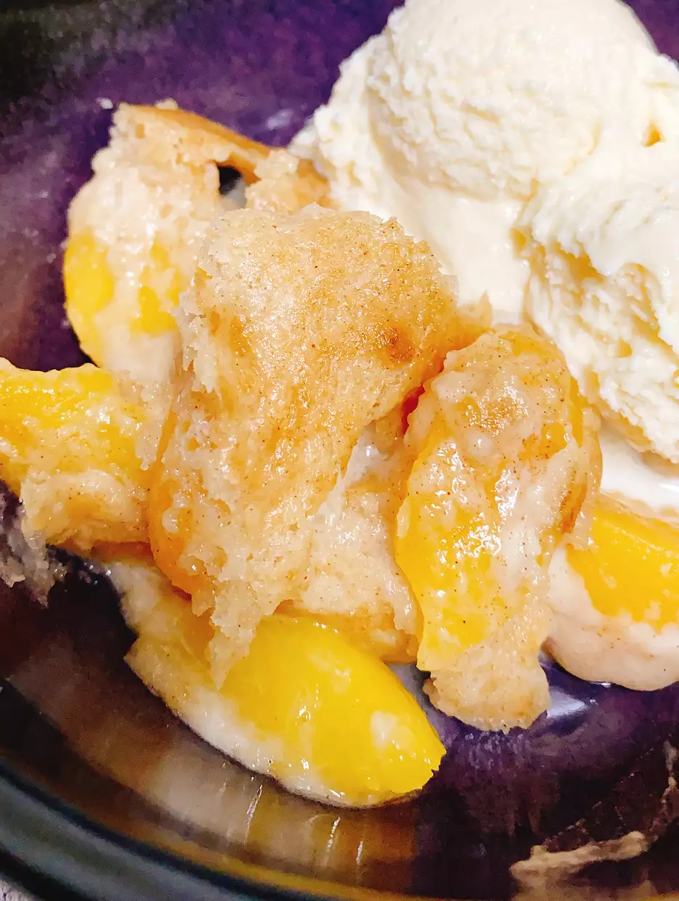

Peach Cobbler Recipe

Cobblers are an American deep-dish fruit dessert or pie with a thick crust (usually a biscuit crust) and a fruit filling (such as peaches, apples, berries). Some versions are enclosed in the crust, while others have a drop-biscuit or crumb topping.
Ingredients
- 3 (15 oz) can peaches, drained
- 1 TTSP cinnamon sugar
- 1 Box white cake mix
- 1/4 TSP ground cinnamon
- 4 TBSP unsalted butter
- 1/4 cup water
Steps
- Drain peaches and pat dry with a paper towel. Sprinkle peaches with cinnamon sugar.
- Mix dry cake mix with cinnamon. Cut in butter until mixture resembles coarse crumbs. Set 1/2 of the mixture aside.
- Mix peaches with 1/2 of the cake mix mixture; place in a 6-inch round dish. Top peaches with remaining cake mix mixture. Cover dish with foil.
- Pour water into a multi-functional pressure cooker (such as Instant Pot®). Set trivet inside. Place round dish on top of the trivet. Close and lock the lid. Select high pressure according to manufacturer's instructions; set timer for 12 minutes. Allow 10 to 15 minutes for pressure to build.
- Release pressure using the natural-release method according to manufacturer's instructions, about 20 minutes. Unlock and remove the lid. Quick release remaining pressure using the quick-release method, about 5 minutes.
- Set an oven rack about 6 inches from the heat source and preheat the oven's broiler.
- Carefully remove dish from the pot and uncover. Broil until topping is set, about 2 minutes.